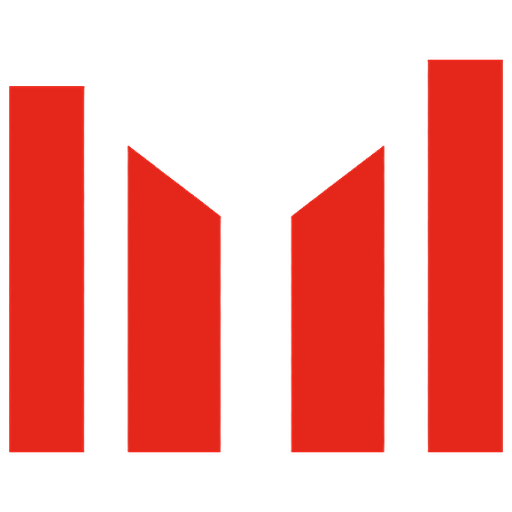
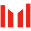
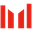
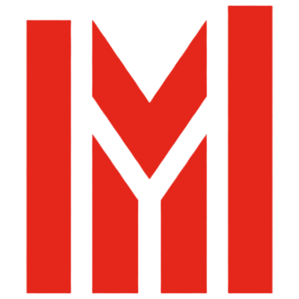
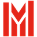
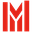
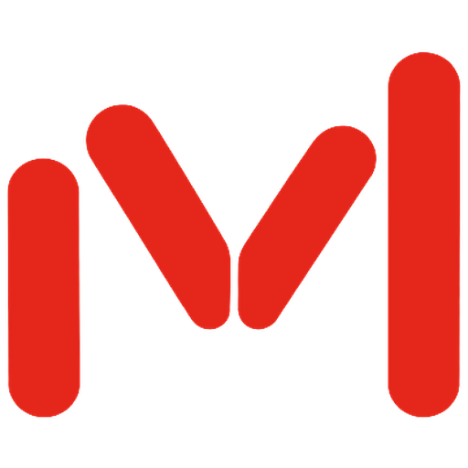

Four marks survived. Pick one to take to vector.
Twelve generations from batch 2, judged against the brief: reads as a capital M, keeps the bar graph, flat Signal on Carbon, holds at 16px. Every mark here is cut from the raw output and recoloured to exact Signal, so what you see at 16px is the real downsample, not a redraw.
G1Four bars, cut tops


32
16For
Closest to the agreed principles, and the most direct descendant of the old bar graph. Sits calmly next to the wordmark.
Against
The V is implied by the cut tops rather than drawn, and the centre gap is wide. At 16px it reads as bars first, M second.
N1Bars with a carved V


32
16For
The strongest M read of the bar builds, and the tallest, most confident silhouette. The outer legs still hold at 16px.
Against
The inner cut forms a Y as much as a V. The thin gaps close at 16px, so the middle turns into a solid block. Vectorising would need the gaps opened up to bar width.
G6M carved from a tile
 Maximum LeverageMaximum Leverage
Maximum LeverageMaximum LeverageFor
The M is unmistakable, because all four tops trace one V. The best-performing favicon and app icon in the set.
Against
It only works inside the red tile, so beside the wordmark it is the heaviest option. The rounded corners fight the square-cut bars. The positive version (red bars, no tile) is worth drawing if you like the geometry.
G3Rounded legs, drawn V

For
Reads as M instantly at every size, and the rising legs still carry the growth idea. The friendliest of the four.
Against
It is the furthest from the old bar graph: the middle is a letter stroke, not a bar. The rounded ends are softer than Host Grotesk's cut terminals.
Cut
- G2 · five barsReads as a chart with a dip. Five bars merge into a block at 16px.
- G4 · three barsThree rising bars is the signal-strength icon. No M.
- G5 · stencilSeven bars reads as an audio equaliser.
- G7 · growth MThe floating centre chevron detaches and turns to noise at 16px.
- G8 · thin roundedRising rounded bars read as a signal icon. You only see the M once told.
- N2 · five barsA chevron over bars echoes Gmail's red M, and the slits close at 16px.
- N3 · rounded VThe broken V and short left leg read as ".vl", not M.
- N4 · growth MBest at 16px, but it is a typeset M with one tall leg. The bar graph is gone, so it could be anyone's M.